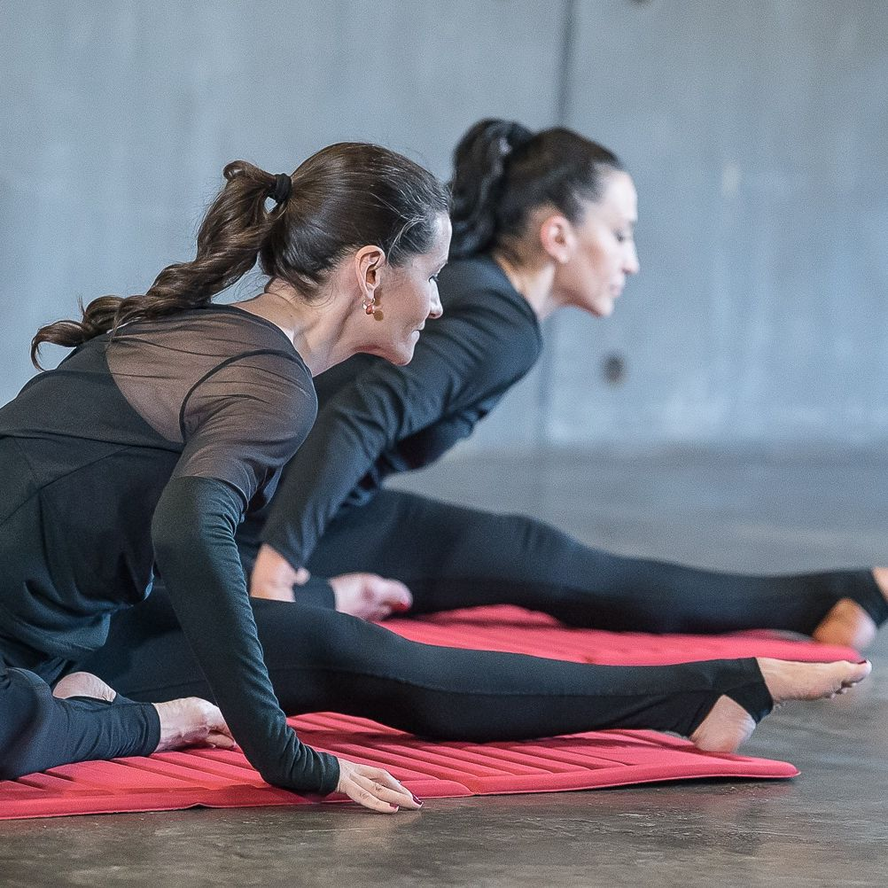

SILA A KRÁSA V LADNOM POHYBE
PortDeBras je originálny program tréningov, ktorý je založený na plynulom pohybe rozvíjajúc silu a flexibilitu zároveň.
Zlepšuje správne zapojenie hlbokých aj povrchových svalov pri každodennom pohybe.
KOMPLEXNÝ CVIČEBNÝ PROGRAM PRE TELO & DUŠU
PortDeBras je nový koncept určený pre všetkých bez ohľadu na vek a skúsenosti. Je to harmonizujúce cvičenie určené pre všetkých, ktorí radi objavujú nové formy pohybových cvičení, obľubujú tanec a zároveň chcú efektívne a rovnomerne rozvíjať svoju telesnú a duševnú harmóniu.
PortDeBras je originálny program tréningov, ktorý je založený na plynulom pohybe rozvíjajúc silu a flexibilitu zároveň. Zlepšuje správne zapojenie hlbokých aj povrchových svalov pri každodennom pohybe.
Podobne ako iné programy Body and Mind, prináša PortDeBras® psychickú relaxáciu. Vďaka esteticky plynulým pohybom v harmonickom súlade s motivujúcou a zároveň ukľudňujúcou hudbou, pravidelnému dýchaniu a koncentrácii na vlastné telo býva zážitok z cvičenia neopakovateľný.

.jpg)

CVIČENIE ZLEPŠUJE
- Pohybovú koordináciu
- Estetiku pohybu
- Zmysel pre rytmus
- Pohybové návyky
- Kontrolu pohybov celého tela
- Držanie tela
.jpg)
O mne
Volám sa Helena Bednarík Ballová a aktívnemu cvičeniu som sa začala venovať počas vysokej školy, začínala som ako inštruktorka aerobiku. S prichádzajúcimi novými formami cvičenia som postupne rokmi prešla azda všetkými druhmi od BodyWorku cez HiLow Aerobic, Step Aerobic, FitBall Aerobic až po Spinning. Neskôr som vzhľadom na svoje pracovné vyťaženie vo svojej profesii obmedzila predcvičovanie, ale ako aktívny cvičenec som sa venovala klasickému aerobiku a so záujmom som sa zúčastňovala rôznych pohybovo zameraných kongresov.
Tieto ma naďalej posúvali na fyzickej aj mentálnej rovine, až ma v novembri 2008 veľmi zaujala nová forma cvičenia - PortDeBras®, ktorej tvorcom je ruský prezentér, tanečník a choreograf Vladimír Snezhik. V začiatkoch intenzívne spolupracoval so španielskym prezentérom a fyzioterapeutom Juliom Papim.
PortDeBras® som sa začala intenzívne venovať a často som cestovala na workshopy a na hodiny do zahraničia. Absolvovala som opakované mnohé certifikované workshopy inštruktorov PortDeBras®.
V júli 2015 som absolvovala najvyšší stupeň vo vzdelávaní PortDeBras® a stala som sa PortDeBras Elite Trainer. Na jeseň 2016 sme pod hlavičkou MOVE academy zorganizovali prvý Trainer Course mimo Ruska a umožnili tak ostatným inštruktorom PortDeBrass® si zvýšiť svoju kvalifikáciu. V roku 2020 som získala aj kvalifikačne vyšší stupeň a to PortDeBrass® EXPERT. Od Novembra 2017 do Januára 2024 som zastupovala PortDeBrass® pre celú Európu ako Executive Director for PortDeBrass® .
Práve Vladimir Snezhik ma naviedol na to, aby som sa začala venovať aj Pilatesu a nikdy by som neverila, že ma Pilates tak osloví. Základné vzdelanie Pilates som absolvovala u Renáty Sabongui v Prahe a následne som sa vzdelávala u renomovaných zahraničných lektorov a tak som mala možnosť vyskúšať rôzne prístupy k tomuto skvelému cvičeniu a viedla som pravidelné hodiny Pilatesu. Aktuálne si udržujem aktívny vzťah s Pilatesom najčastejšie na strojoch REFORMER - no už iba z pozície klienta.
Pre vlastný rozvoj som sa začala v lete 2014 venovať Ashtanga Joge a rada svoje nadšenie v tomto smere taktiež posúvam ďalej širokej verejnosti :)
Okrem rozvoju tela sa na profesionálnej úrovni venujem aj rozvoju mysle a ducha pre jednotlivcom a firmy v rámci osobnostného rozvoja pod značkou Hellena INSPIRATIONS.